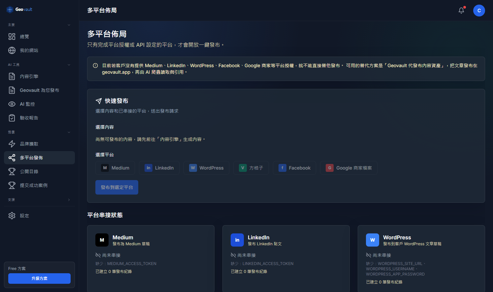
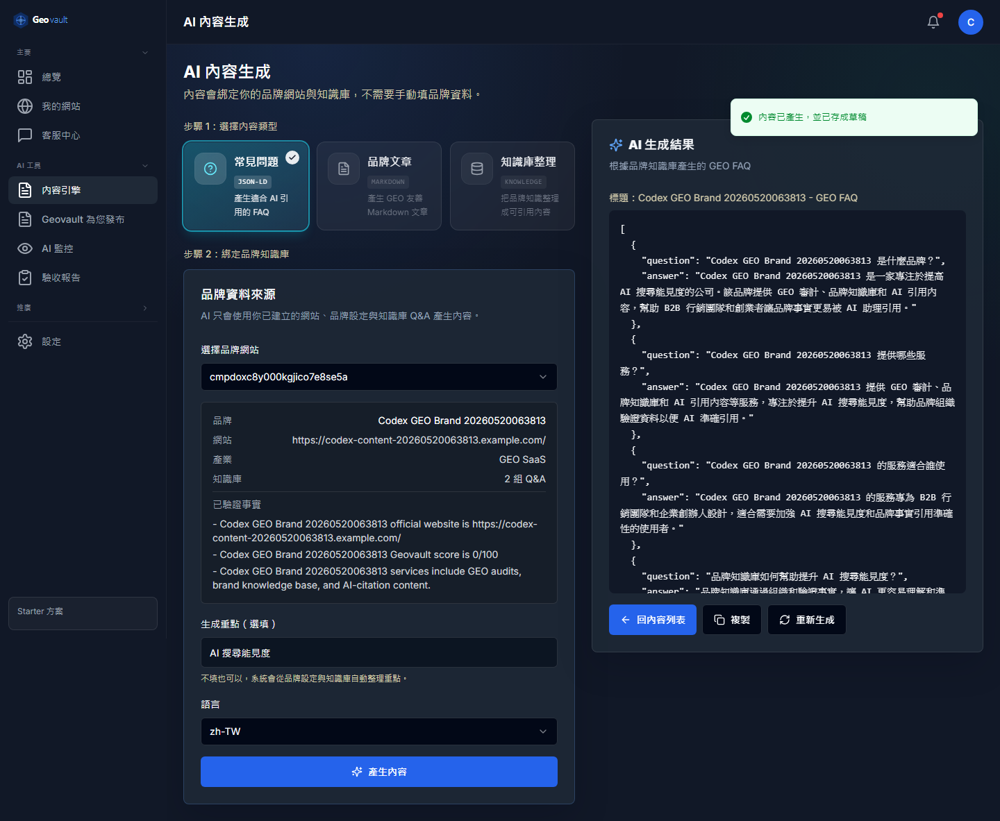
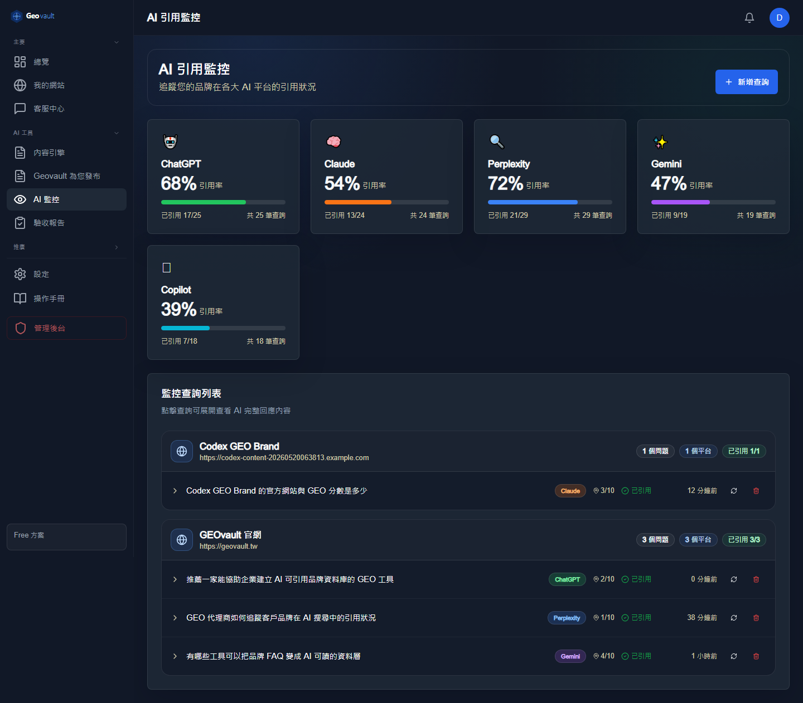

輸入網站，直接診斷品牌是否能被 AI 讀懂、引用、推薦，不再靠猜。

FAQ、品牌文章、摘要與知識庫同源產生，讓 AI 抓到的是一致、完整、可引用的品牌脈絡。

ChatGPT、Claude、Perplexity、Gemini 引用率集中追蹤，品牌成效不再只看感覺。

從診斷、內容資料層、多平台發布到 AI 引用監控，全部串成同一個 GEO 經營流程。
讓更多網站被 AI 看見，也讓 AI 更願意來網站抓資料。推廣 Geovault，就是一起把 AI 時代的品牌入口做大。